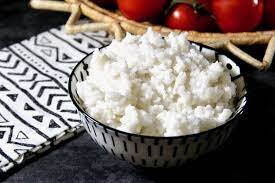

Burmese Coconut Rice

This coconut rice is best served with chicken curry, ngapi kyaw, and roselle leaves.
Ingredients
- 3 cups uncooked jasmine rice, rinsed and drained
- 2 cups coconut milk
- 1 ½ cups water
- 1 tablespoon grated onion, or to taste
- 1 pinch white sugar
- 1 pinch salt
Directions
- Heat coconut milk, water, onion, sugar, and salt in a saucepan. Pour in rinsed and drained rice. Bring to a boil. Reduce heat, cover, and let simmer, stirring occasionally, until fragrant, tender, and liquid has been absorbed, 20 to 25 minutes.